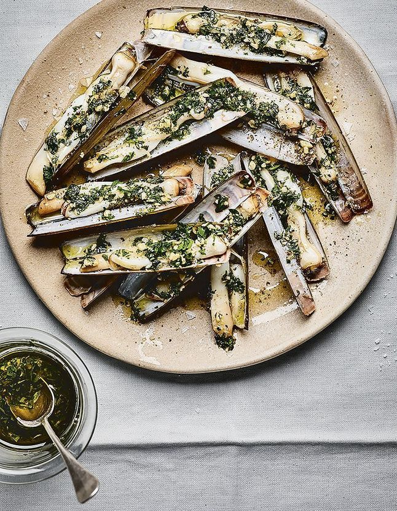

Recette de Couteaux au Pesto
Découvrez notre délicieuse recette de couteaux au pesto, parfaite pour un repas original et fin.
Ingrédients :
- 1kg de couteaux frais
- 3 à 4 cuillères à soupe de pesto
- 2 gousses d'ail hachées finement
- 1 cuillère à soupe d'huile d'olive
- 5 cl de vin blanc sec
- 1/2 citron (pour le jus)
- Poivre du moulin (pas besoin de sel, les couteaux le sont déjà)
- Persil haché (optionnel)
Instructions :
- Plongez les couteaux debout dans un grand récipient d'eau froide très salée pendant 1 à 2 heures.
- Rincez-les abondamment sous l'eau claire pour éliminer tout reste de sable, puis égouttez-les bien sur de l'essuie-tout.
- Faites chauffer l'huile d'olive à feu vif dans une grande poêle ou une plancha.
- Ajoutez l'ail haché et faites-le revenir quelques secondes sans le colorer.
- Jetez les couteaux dans la poêle bien chaude et déglacez immédiatement avec le vin blanc sec.
- Couvrez et laissez cuire 2 à 3 minutes jusqu'à ce que les couteaux s'ouvrent.
- Dès qu'ils sont ouverts, coupez le feu.
- Ajoutez les cuillères de pesto directement dans la poêle et mélangez délicatement pour enrober la chair des couteaux avec le jus de cuisson et le pesto chaud.
- Donnez un tour de moulin à poivre et ajoutez un filet de jus de citron frais.
- Dressez les couteaux bien chauds dans un plat creux avec le jus au pesto. Servez immédiatement avec du bon pain de campagne grillé pour napper la sauce.
Bon appétit !
Partagez votre avis.
Votre opinion est importante pour nous !